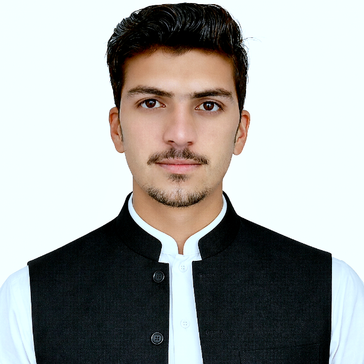

Web Development
Responsive web interfaces and application development using front-end and back-end technologies.
Web Developer
Computer Science graduate specializing in Information Systems. Interested in web development, database management, data reporting, and technology solutions that help organizations manage information effectively.

A Computer Science graduate with an Information Systems foundation and a practical interest in software, data, and organizational workflows.
I graduated from Nangarhar University, Faculty of Computer Science, Department of Information Systems. My academic background includes programming, systems analysis, database concepts, and software development.
My areas of interest include developing web applications, structuring and maintaining databases, organizing records, and preparing useful reports. I approach work through problem analysis, clear documentation, attention to data quality, and continuous learning.
I am seeking an opportunity to contribute to an organization's IT, information management, database, or software development activities while continuing to grow professionally.
Technical and operational areas relevant to information systems, IT, data, and software roles.
Responsive web interfaces and application development using front-end and back-end technologies.
Database design concepts, SQL, structured records, CRUD operations, and information retrieval.
Data organization, validation, spreadsheet management, documentation, and report preparation.
Requirements gathering, workflow understanding, systems analysis, and information organization.
Task planning, progress tracking, documentation, coordination, and issue identification.
Programming fundamentals, object-oriented concepts, debugging, testing, and problem solving.
Technologies and working areas included in my academic and practical background.
Academic systems and practical experience that demonstrate how I apply technical and organizational knowledge.
Designed and developed an employee information system to organize personnel records, manage staff data, and generate reports for an organizational setting.
Developed a management-system project focused on organizing stationery inventory and sales information to support daily shop operations.
Business-owner experience involving daily operations, product activities, coordination, and customer communication.
2022 – 2026
2008 – 2021
Languages I use for communication and learning.
I welcome consideration for relevant opportunities in web development, database management, IT support, data management, and information systems.
Location: Kabul, Afghanistan